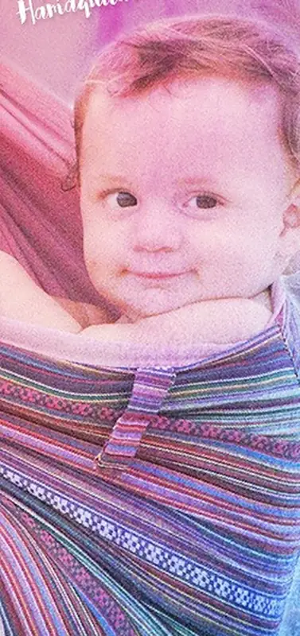
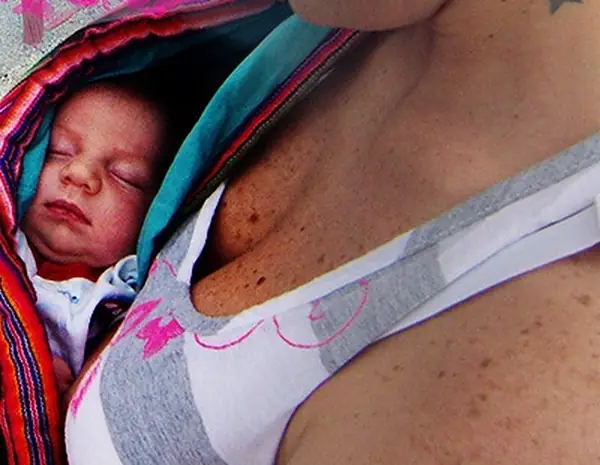
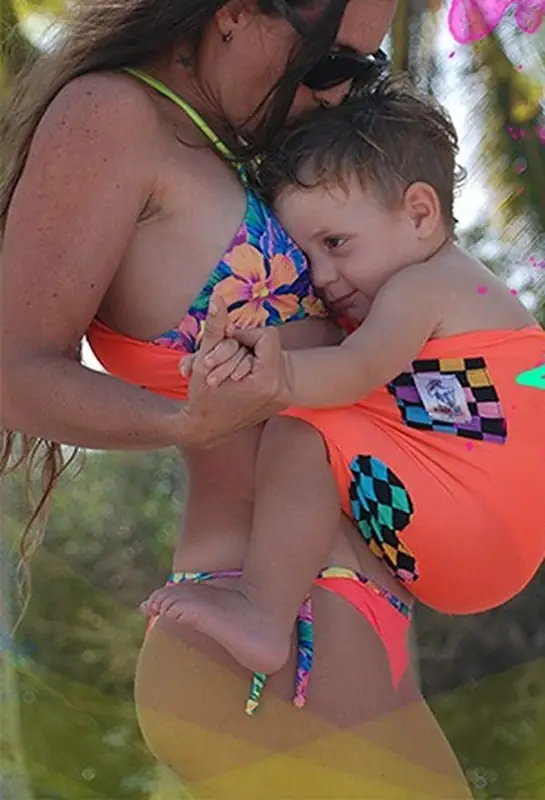
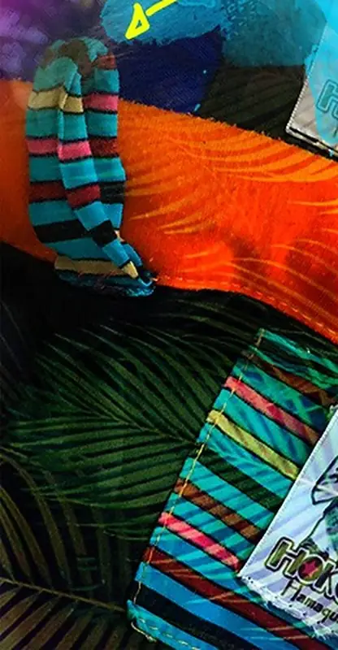
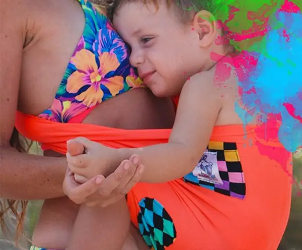
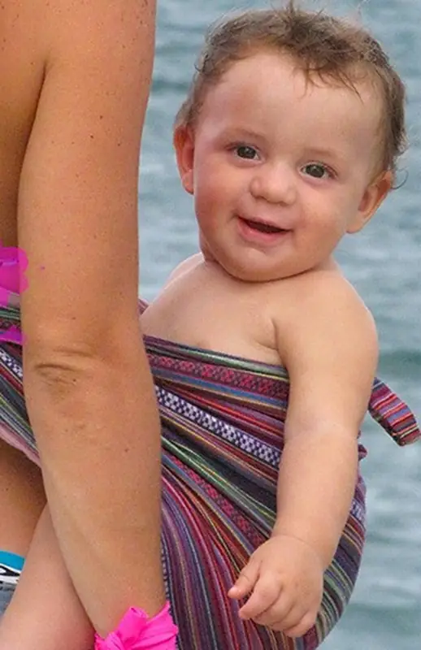

La Hoku Hamaquita
Un portabebés ergonómico de tela, tipo bolsa de canguro o hamaquita, que se usa de manera muy fácil para que padres y bebés estén juntitos y cómodos.

Detalle por detalle
La tela
Son dos telas de algodón cosidas una con la otra. La de afuera es más gruesa y resistente, sin dejar de ser suave; la de adentro es un algodón más suavecito. Las estampadas actuales son tipo piel de durazno.
Es reversible: la puede usar por los dos lados.

Los acolchados
Tiene dos bordes acolchados donde van las piernitas, para que la parte de atrás de sus piernas vaya apoyada, y un acolchado arriba que queda en el hombro de quien portea.
Con recién nacidos, ese acolchado le sirve de rebozo para la cabecita.

Bolsillo y etiqueta
Tiene un bolsillo decorativo donde va la etiqueta.
La etiqueta es muy importante: con ella se ubica cada posición en las instrucciones de uso.

La argollita
Tiene una argollita de tela donde puede colocar un juguetico o un collar de lactancia, para que el bebé juegue y estimule sus sentidos.

Los estampados
Viene en variados estampados, unicolor o combinando unicolores.
Dependen de lo que haya en cada producción, y muy difícilmente se repiten.

Cómo cuidarla
Se puede lavar en lavadora sin problema, pero se recomienda no meterla en la secadora.
Lávela siempre antes de usarla por primera vez.
Respeta la postura natural del bebé: espalda en "C" y piernas en "M". Ver cómo.
Según el peso y la estatura de quien la usa. Ver tallas.
Desde recién nacido, en cuatro posiciones. Ver posiciones.